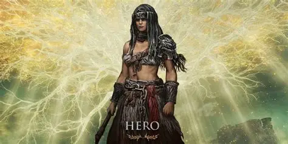
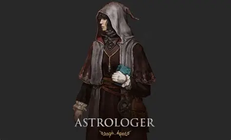
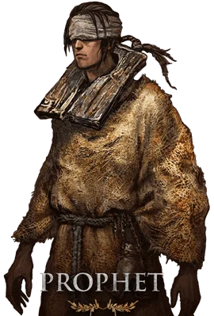
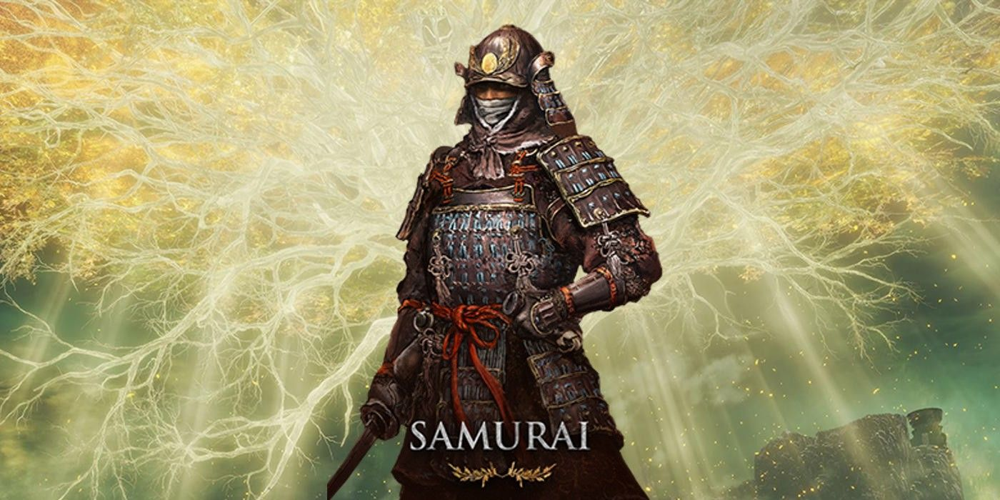
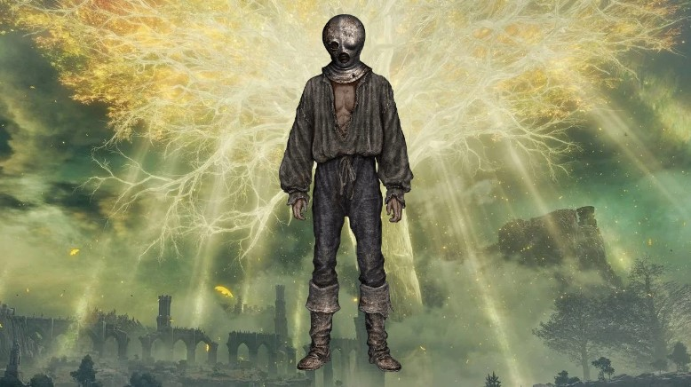
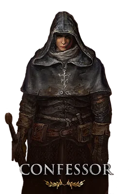
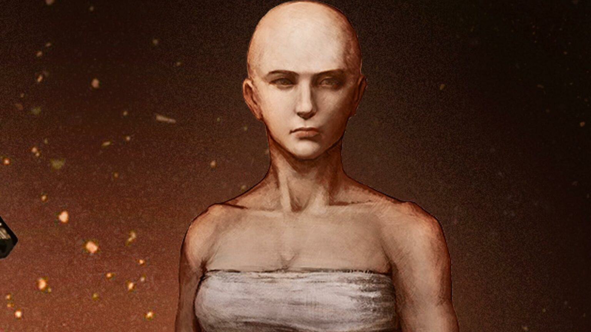

The Tarnished Classes

Vagabond
Level: 9 | Primary Stats: Vigor, Strength, Dexterity
A knight expelled from their homeland to wander. A solid, armor-clad origin with high HP and balanced physical stats.

Warrior
Level: 8 | Primary Stats: Dexterity, Mind
A nomad warrior who fights wielding two blades at once. High dexterity allows for agile, fast-paced combat styles.

Hero
Level: 7 | Primary Stats: Strength, Vigor
A descendant of a badlands chieftain who wields a battle axe. Perfect for players focusing on massive physical power.

Bandit
Level: 5 | Primary Stats: Arcane, Dexterity
A dangerous bandit that strikes for weak points. Excels at using bows and items that benefit from high Arcane.

Astrologer
Level: 6 | Primary Stats: Intelligence, Mind
A scholar who reads fate in the stars. The best choice for a pure Sorcery build using Glintstone magic.

Prophet
Level: 7 | Primary Stats: Faith, Mind
A seer ostracized for inauspicious prophecies. Starts with powerful Incantations and high Faith for holy magic.

Samurai
Level: 9 | Primary Stats: Dexterity, Endurance
A capable fighter from the distant Land of Reeds. Handy with both a katana and a longbow.

Prisoner
Level: 9 | Primary Stats: Intelligence, Dexterity
A prisoner bound in an iron mask. This is a "hybrid" class, capable of both physical strikes and sorcery.

Confessor
Level: 10 | Primary Stats: Faith, Strength, Dexterity
A church spy adept at covert operations. Equally adept with a sword as they are with incantations.

Wretch
Level: 1 | Primary Stats: All 10
A naked wretch, as poor as they are purposeless. A blank slate for experienced players who want full control over their stats.